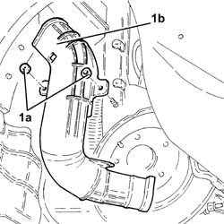
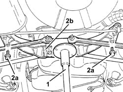
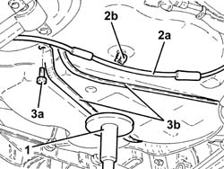
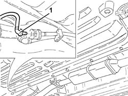
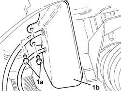
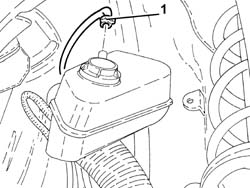

1080E57 Fuel vapour PIPE from SEPARATOR to intermediate pipe for ACTIVE CHARCOAL FILTER - R.R.
- Path
- Procedures > 10 ENGINE > 1080 EXHAUST EMISSION CONTROL SYSTEM > 1080E evaporation control system > 1080E57 Fuel vapour PIPE from SEPARATOR to intermediate pipe for ACTIVE CHARCOAL FILTER - R.R.
- Kind
- repair procedure (removal / refitting; the operation number is the code)
- Applies to
- engines: 2.5 V6, 3.2 V6; all production periods
- Interactive page
- https://sloeber94.github.io/elrnDB-a156/en/#/3237600
Applies to: engines: 2.5 V6, 3.2 V6; all production periods
 Removing
Removing
 Refitting
RefittingPosition the vehicle on the ramp.
Proceed with the removal 4450B11 WHEEL (one) rear - R.R. (Right side).
Partly prise up the right rear wheel wheel arch protection.
1. Undo the bolts (1a) and remove the protection (1b) for the fuel filler pipe after releasing from the retaining bands

Applies to: engines: 2.5 V6, 3.2 V6; all production periods
1. Position a hydraulic jack under the rear suspension crossmember.
2. Undo the bolts (2a) and lower the rear suspension crossmember (2b), as necessary, using the hydraulic jack.

Applies to: engines: 2.5 V6, 3.2 V6; all production periods
1. Move the hydraulic jack under the fuel tank.
2. Release the handbrake cable (2a) from the fastening (2b) on the fuel tank.
3. Undo the bolts (3a) and remove the fuel tank support belts (3b).

Applies to: engines: 2.5 V6, 3.2 V6; all production periods
1. Lower the fuel tank as far as necessary and disconnect the fuel vapour pipe coupling from the separator to the activated carbon filter intermediate pipe, intermediate pipe side.

Applies to: engines: 2.5 V6, 3.2 V6; all production periods
1. Undo the bolts (1a) and lower the fuel vapour separator (1b) as much as necessary.

Applies to: engines: 2.5 V6, 3.2 V6; all production periods
1. Disconnect the fuel vapour pipe from separator to activated carbon filter intermediate pipe, multifunction valve side, and remove.

Applies to: engines: 2.5 V6, 3.2 V6; all production periods
Refitting
RemovingRefit the fuel vapour pipe from separator to activated carbon filter intermediate pipe and connect to the multifunction valve.
Place the fuel vapour separator back in its housing and fix it using the bolts.
Connect the coupling of the fuel vapour pipe from separator to activated carbon filter intermediate pipe, intermediate pipe side.
Place the fuel tank back in its housing using the hydraulic jack.
Fit the fuel tank support belts and fix them using the bolts.
Move the hydraulic jack underneath the rear suspension, refit and secure by tightening the bolts to the specified torque.
 | Fastening | Component | Ø | Value (daNm) |
|---|---|---|---|---|
- | Bolt | REAR CROSS-BEAM | M10 | (Bodyshell side) 6.2 ÷ 6.8 |
Remove the hydraulic jack from under the rear suspension crossmember.
Place the fuel filler pipe protection back in its housing and fasten it using the nuts and bands.
Refit the right rear wheelarch protection.
Proceed with the refitting 4450B11 WHEEL (one) rear - R.R. (Right side).
Remove the car from the ramp.